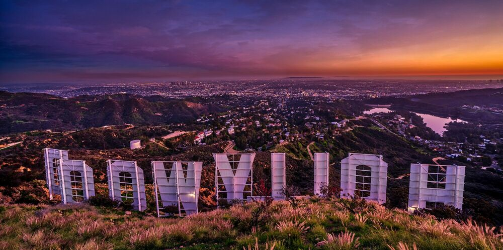

Jednym z najważniejszych symboli Los Angeles jest napis Hollywood umieszczony na wzgórzu Mount Lee w dzielnicy Hollywood Hills. Olbrzymi napis góruje nad tą częścią miasta i jest jedną z najbardziej rozpoznawalnych atrakcji turystycznych. Odsłonięto go prawdopodobnie 13 lipca 1923 roku, ale jako napis Hollywoodland.
Twórcą napisu był Harry Chandler, właściciel gazety Los Angeles Times i deweloper, inwestujący w tereny w okolicach Hollywood w Los Angeles. Napis miał być reklamą inwestycji Chandlera. Pomysłodawcą takiej formy promocji był inny biznesmen, Hobart J. Whitley, który w podobny sposób reklamował swoje działki i zasugerował Chandlerowi skorzystanie z pomysłu.Prace nad napisem Hollywoodland zlecono firmie Crescent Sign Company, która miała przygotować 13, 15-metrowych liter o drewniano-metalowej konstrukcji. Dodatkowo cały napis podświetlono 4000 żarówek. Prace nad napisem zakończono w połowie 1923 roku i według różnych źródeł odsłonięto go 13 lipca 1923 roku (data ta nie jest jednak w pełni potwierdzona).
Koszt projektu wyniósł 21 000 dolarów (współcześnie około 309 000 dolarów). Początkowo zakładano, że konstrukcja będzie stała w tym miejscu przez dwa lata. Szybko jednak niecodzienna reklama stała się atrakcją turystyczną przyciągającą tłumy turystów. Głównym powodem był rozwój przemysłu filmowego w Hollywood i popularyzacja kina. Gdy Hollywood stało się symbolem kina, napis Hollywoodland stał się symbolem amerykańskiego przemysłu filmowego.Nowe litery, które stoją do dnia dzisiejszego mają 14 m wysokości (są nieco mniejsze od oryginalnych) a ich konstrukcja jest znacznie solidniejsza. Oficjalnie odsłonięcie nowego napisu Hollywood miało miejsce 11 listopada 1978 roku. Po odbudowie, lokalne władze zaczęły zabezpieczać teren wokół napisu, aby nie doprowadzić do jego ponownego zniszczenia.
W kolejnych latach napis Hollywood spotykały różne przygody i spotkania z wandalami oraz różnego rodzaju aktywistami, którzy doraźnie dokonywali przeróbek napisu w różnych celach, zmieniając jego wymowę. Na szczęście akcje te nie doprowadziły do poważniejszych zniszczeń. Napis Hollywood cały czas jest symbolem Los Angeles, a zwłaszcza dzielnicy Hollywood kojarzonej z przemysłem filmowym i gwiazdami kina. Często też występuje w filmach, zwłaszcza katastroficznych, gdzie jest niszczony w efektowny sposób.

